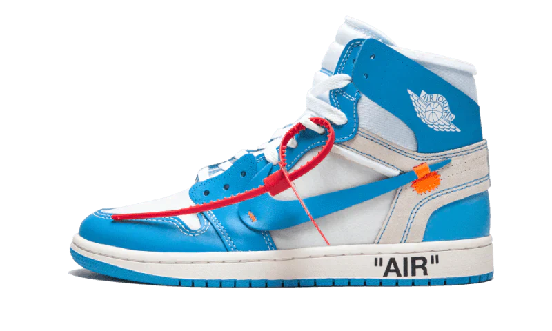

Air Jordan 1
High x off white (unc)
Le Nike Air Jordan 1 Retro High x Off-White UNC sono caratterizzate dai colori del bianco e dell'azzurro, nuance che rimanda al college nel north Carolina di Michael jordan. La scritta "AIR" sulla suola, dettagli dell'Oregon di Nike sul lato e le sottili cuciture arancioni sullo Swoosh compleanno il Design di questa fantastica sneaker. Per molti è una delle migliori colorazioni delle jordan 1 in collaborazione con Off-White. La sneaker è realizzata con uno schema di colori identico alla versione “Chicago“, ma con l’azzurro a sostituire il rosso. Una caratteristica di questa versione è il nuovo materiale utilizzato per la toe box, più resistente di quello visto nelle versioni precedenti.
1035,00 €
